Apache Kafka
We will start with a python and ML agnostic component of our streaming ML model deployment workflow.
Apache Kafka
Is a popular Java/Scala based OSS (open-source software) streaming solution that allows one to stream messages. These messages can be streamed to and from various end-points.
See the Github repo for the code and wikipedia for its history. It started out of LinkedIn in 2011.
From its webpage,
Apache Kafka is an open-source distributed event streaming platform used by thousands of companies for high-performance data pipelines, streaming analytics, data integration, and mission-critical applications.
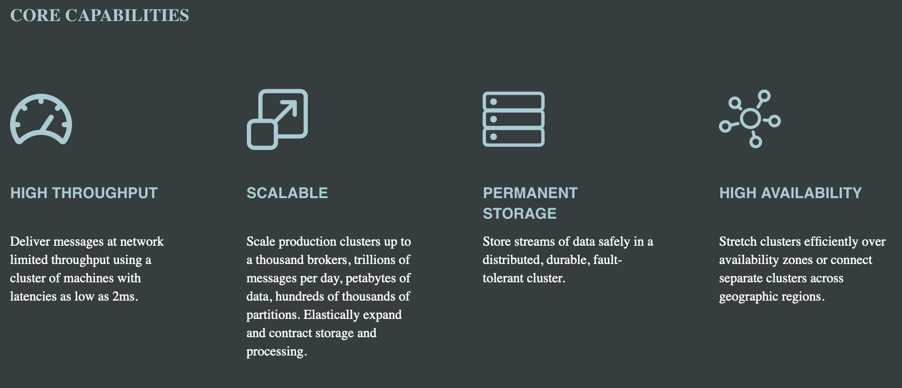 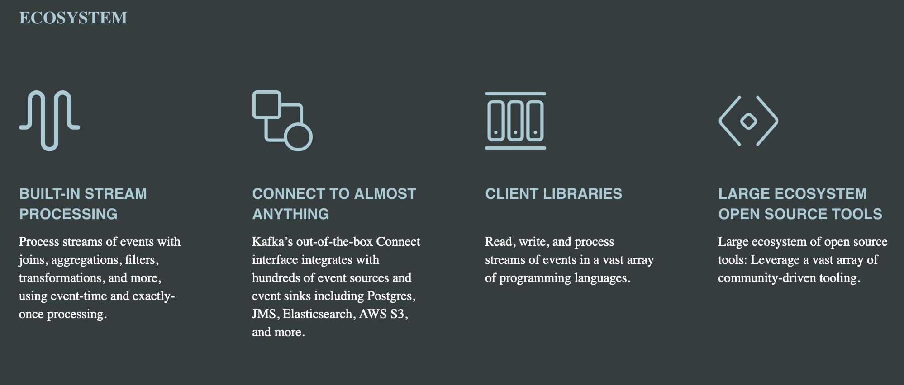 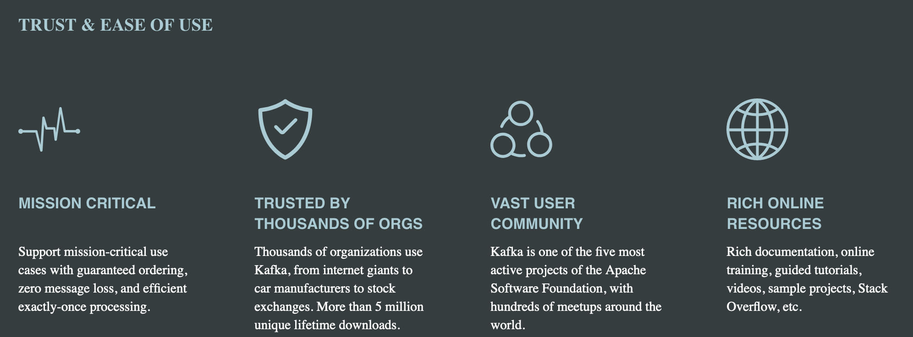
Architecture
We will not go into the technical details of the software here. Instead, we will familiarize ourselves with some of its building blocks.
First is the notion of producers and consumers of messages.
These producers and consumers are arbitrary programs (e.g., pyspark in our case).
The messages produced by producers are partitioned into topics. Within a topic, the messages are stored in ways that maximize I/O and network efficiency.
Consumers read from these topics, and thus partitions.
The messages in the topics typically have constraints (older messages will be deleted or only the most recent messages will be retained).
The messages can be read many times by many consumers as long as the constraints are met.
The manageemnt of topics,partitions and messages happens on brokers (essentially nodes of a cluster). For instance, partitions are copied and synced on multiple brokers for redundancy.

{kind=link}
Setup
- We will set up Kafka on a local dev machine (e.g., AWS EC2/your laptop) and create a topic to which producers can send messages to and consumers can read messages from.
- Typically it needs one to build out a cluster ourselves and manage it. There are managed solutions by cloud vendors that help you with this.
Lets spin up a VM
- We will use Vultr VPS that we have used before. We could also use AS EC2 or GCP Cloud Instances.
- Below are the screenshots of the process.
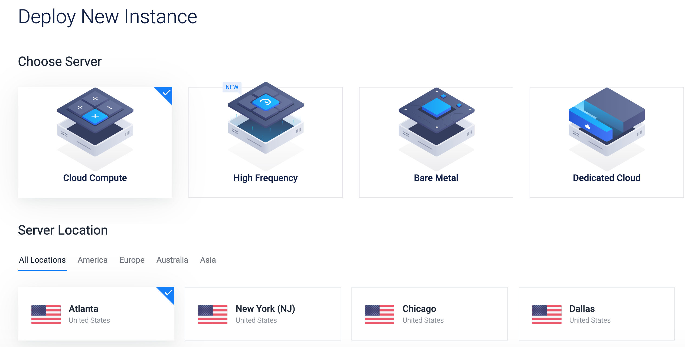
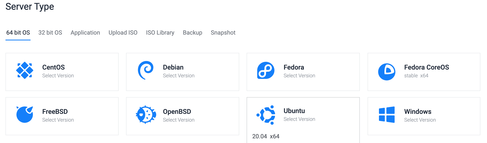
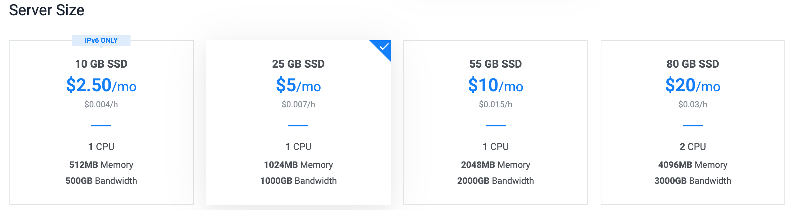
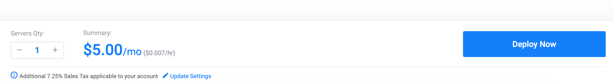
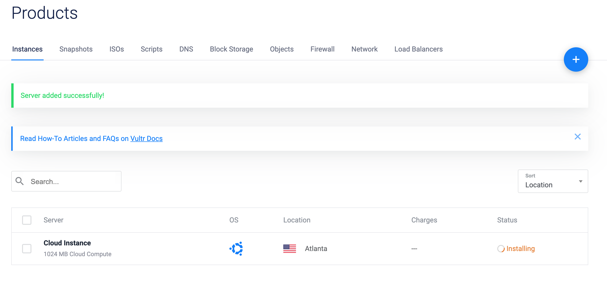
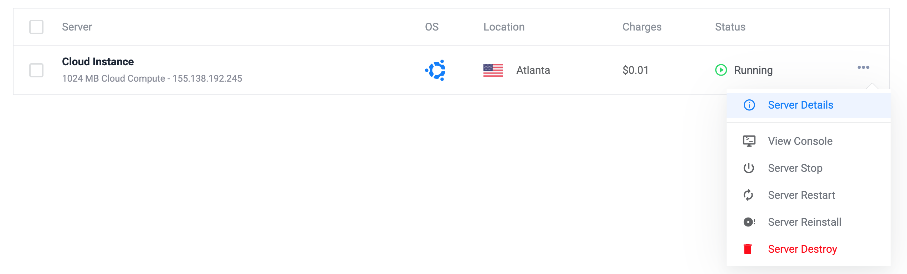
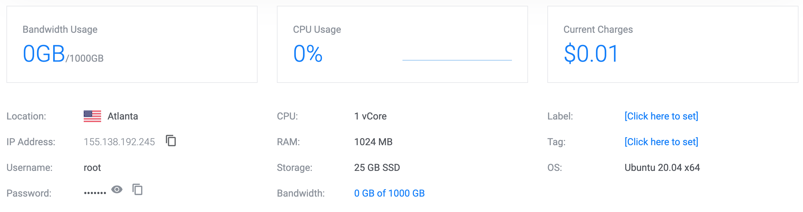

Given the details, log into the machine. Copy your ssh keys if needed and change the access to a password less access.
(datasci-dev) ttmac:mlops theja$ ssh root@155.138.192.245 root@vultr:~# pwd root@vultr:~# mkdir .ssh root@vultr:~# cd .ssh/ root@vultr:~# vim authorized_keys #paste your id_rsa.pub or other SSH key file root@vultr:~# vim /etc/ssh/sshd_config #change line 58 or nearby by removing # and setting `no`: PasswordAuthentication no root@vultr:~# sudo systemctl restart ssh root@vultr:~# apt install fail2ban root@vultr:~# ufw allow 22 root@vultr:~# ufw enable Command may disrupt existing ssh connections. Proceed with operation (y|n)? y Firewall is active and enabled on system startup root@vultr:~# ufw status verbose Status: active Logging: on (low) Default: deny (incoming), allow (outgoing), disabled (routed) New profiles: skip To Action From -- ------ ---- 22 ALLOW IN Anywhere 22 (v6) ALLOW IN Anywhere (v6) root@vultr:~#We have discussed these steps and others while investigating ML hosted deployment on VMs/VPSs. The above instructions are minimal to get started with a somewhat secure machine.
Next we will follow the quickstart guide here: https://kafka.apache.org/quickstart
Install java runtime.
root@vultr:~# apt install openjdk-8-jre-headless root@vultr:~# java -version openjdk version "1.8.0_265" OpenJDK Runtime Environment (build 1.8.0_265-8u265-b01-0ubuntu2~20.04-b01) OpenJDK 64-Bit Server VM (build 25.265-b01, mixed mode)Download Kafka and unzip it
root@vultr:~# wget http://mirror.cc.columbia.edu/pub/software/apache/kafka/2.6.0/kafka_2.13-2.6.0.tgz --2020-10-08 17:46:46-- http://mirror.cc.columbia.edu/pub/software/apache/kafka/2.6.0/kafka_2.13-2.6.0.tgz Resolving mirror.cc.columbia.edu (mirror.cc.columbia.edu)... 128.59.59.71 Connecting to mirror.cc.columbia.edu (mirror.cc.columbia.edu)|128.59.59.71|:80... connected. HTTP request sent, awaiting response... 200 OK Length: 65537909 (63M) [application/x-gzip] Saving to: ‘kafka_2.13-2.6.0.tgz’ kafka_2.13-2.6.0.tg 100%[===================>] 62.50M 11.1MB/s in 14s 2020-10-08 17:47:01 (4.44 MB/s) - ‘kafka_2.13-2.6.0.tgz’ saved [65537909/65537909] root@vultr:~# ls kafka_2.13-2.6.0.tgz root@vultr:~# tar -xzf kafka_2.13-2.6.0.tgz root@vultr:~# cd kafka_2.13-2.6.0 root@vultr:~/kafka_2.13-2.6.0#We will also get into a screen session:
root@vultr:~/kafka_2.13-2.6.0# screen -list No Sockets found in /run/screen/S-root. root@vultr:~/kafka_2.13-2.6.0# screen -S kafkaNext lets start a service called
zookeeper. This is a distributed configuration and synchronization service. We won’t worry about it, and it will be removed from kafka as a dependency soon.root@vultr:~/kafka_2.13-2.6.0# bin/zookeeper-server-start.sh config/zookeeper.properties [2020-10-08 17:50:09,690] INFO Reading configuration from: config/zookeeper.properties (org.apache.zookeeper.server.quorum.QuorumPeerConfig) [2020-10-08 17:50:09,696] WARN config/zookeeper.properties is relative. Prepend ./ to indicate that you're sure! (org.apache.zookeeper.server.quorum.QuorumPeerConfig) [2020-10-08 17:50:09,706] INFO clientPortAddress is 0.0.0.0:2181 (org.apache.zookeeper.server.quorum.QuorumPeerConfig) . . (truncated) . .In a different terminal in the same screen session (Ctrl+a Ctrl+c, Ctrl+a n/p to navigate), run the Kafka broker service:
root@vultr:~/kafka_2.13-2.6.0# bin/kafka-server-start.sh config/server.properties #you may have to edit the kafka-server-start.sh to reduce the heap size.In a third terminal, lets create a topic. A topic is like a folder and events/messages/records can be considered as files.
root@vultr:~/kafka_2.13-2.6.0# bin/kafka-topics.sh --create --topic quickstart-events --bootstrap-server localhost:9092 Created topic quickstart-events.We can also get a descirption of the currently created topic (such as replication, number of partitions etc):
root@vultr:~/kafka_2.13-2.6.0# bin/kafka-topics.sh --describe --topic quickstart-events --bootstrap-server localhost:9092 Topic: quickstart-events PartitionCount: 1 ReplicationFactor: 1 Configs: segment.bytes=1073741824 Topic: quickstart-events Partition: 0 Leader: 0 Replicas: 0 Isr: 0Lets write some events and read some events next. We will then hook this up with our Databricks spark environment in the next section.
If we execute the following in a new terminal, we can create events as strings (one per line). We can stop by using
Ctrl+c.root@vultr:~/kafka_2.13-2.6.0# bin/kafka-console-producer.sh --topic quickstart-events --bootstrap-server localhost:9092 >Hello >Theja >We can then read these events from Kafka in yet another terminal.
root@vultr:~/kafka_2.13-2.6.0# bin/kafka-console-consumer.sh --topic quickstart-events --from-beginning --bootstrap-server localhost:9092 Hello ThejaWe can switch back to the producer terminal and add more events and experiment with this.
Next, lets do the same as above but with a jupyter notebook. We will port forward so we can access jupyter locally. For a change, we will not use conda below.
Install python and pip.
root@vultr:~/kafka_2.13-2.6.0# apt-get update && apt install -y python3-pip python3-dev root@vultr:~/kafka_2.13-2.6.0# pip3 install --upgrade pip Collecting pip Downloading pip-20.2.3-py2.py3-none-any.whl (1.5 MB) |████████████████████████████████| 1.5 MB 11.8 MB/s Installing collected packages: pip root@vultr:~/kafka_2.13-2.6.0# python3 --version Python 3.8.5 root@vultr:~/kafka_2.13-2.6.0# pip --version pip 20.2.3 from /usr/local/lib/python3.8/dist-packages/pip (python 3.8) root@vultr:~/kafka_2.13-2.6.0# pip3 --version pip 20.0.2 from /usr/lib/python3/dist-packages/pip (python 3.8)Install virtualenv.
root@vultr:~/kafka_2.13-2.6.0# pip3 install virtualenv Collecting virtualenv Downloading virtualenv-20.0.33-py2.py3-none-any.whl (4.9 MB) |████████████████████████████████| 4.9 MB 16.3 MB/s Collecting distlib<1,>=0.3.1 Downloading distlib-0.3.1-py2.py3-none-any.whl (335 kB) |████████████████████████████████| 335 kB 21.0 MB/s Requirement already satisfied: six<2,>=1.9.0 in /usr/lib/python3/dist-packages (from virtualenv) (1.14.0) Collecting filelock<4,>=3.0.0 Downloading filelock-3.0.12-py3-none-any.whl (7.6 kB) Collecting appdirs<2,>=1.4.3 Downloading appdirs-1.4.4-py2.py3-none-any.whl (9.6 kB) Installing collected packages: distlib, filelock, appdirs, virtualenv Successfully installed appdirs-1.4.4 distlib-0.3.1 filelock-3.0.12 virtualenv-20.0.33Change directories if needed.
root@vultr:~/kafka_2.13-2.6.0# mkdir ../jupyter root@vultr:~/kafka_2.13-2.6.0# cd ../jupyter/ root@vultr:~/jupyter#Create a virtual environment.
root@vultr:~/jupyter# virtualenv datasci-dev created virtual environment CPython3.8.5.final.0-64 in 1330ms creator CPython3Posix(dest=/root/jupyter/datasci-dev, clear=False, global=False) seeder FromAppData(download=False, pip=bundle, setuptools=bundle, wheel=bundle, via=copy, app_data_dir=/root/.local/share/virtualenv) added seed packages: pip==20.2.3, setuptools==50.3.0, wheel==0.35.1 activators BashActivator,CShellActivator,FishActivator,PowerShellActivator,PythonActivator,XonshActivatorSource activate the environment.
root@vultr:~/jupyter# source datasci-dev/bin/activate (datasci-dev) root@vultr:~/jupyter#Next lets install
jupyterandkafka-python.(datasci-dev) root@vultr:~/jupyter# pip install jupyter kafka-python (datasci-dev) root@vultr:~/jupyter# jupyter notebook --generate-config Writing default config to: /root/.jupyter/jupyter_notebook_config.py (datasci-dev) root@vultr:~/jupyter# jupyter notebook password Enter password: Verify password: [NotebookPasswordApp] Wrote hashed password to /root/.jupyter/jupyter_notebook_config.jsonBecause we ran as root (bad idea!), we will have to explicitly pass
--allow-rootto start the server.(datasci-dev) root@vultr:~/jupyter# jupyter notebook --no-browser --port=8888 --allow-root [I 18:31:40.386 NotebookApp] Serving notebooks from local directory: /root/jupyter [I 18:31:40.387 NotebookApp] Jupyter Notebook 6.1.4 is running at: [I 18:31:40.387 NotebookApp] http://localhost:8888/ [I 18:31:40.387 NotebookApp] Use Control-C to stop this server and shut down all kernels (twice to skip confirmation).Lets tunnel and access Jupyter from our local machine.
(datasci-dev) ttmac:~ theja$ ssh -N -f -L localhost:9999:localhost:8888 root@155.138.192.245Open the browser, key in your password and start a notebook.
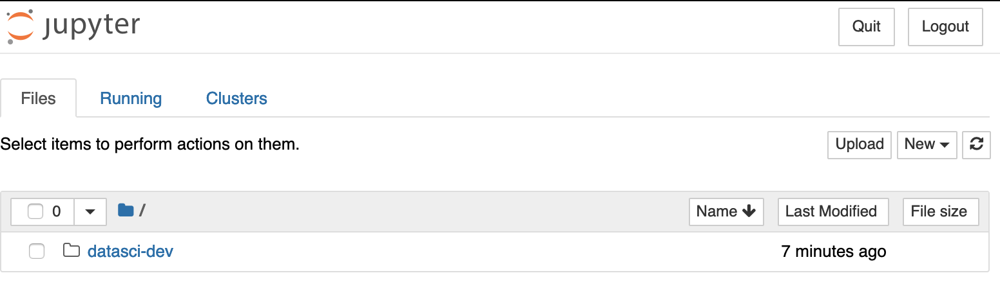
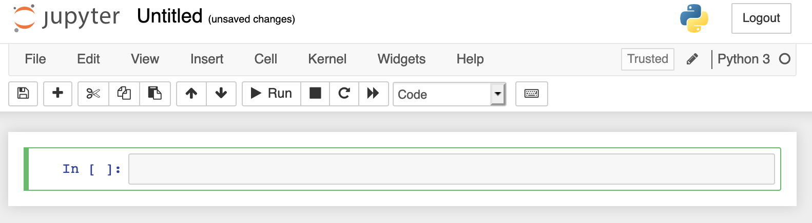
We can now push events to the
quickstart-eventstopic of our Kafka cluster programmatically using python. The Kafka API we are using here is called theProducer API.
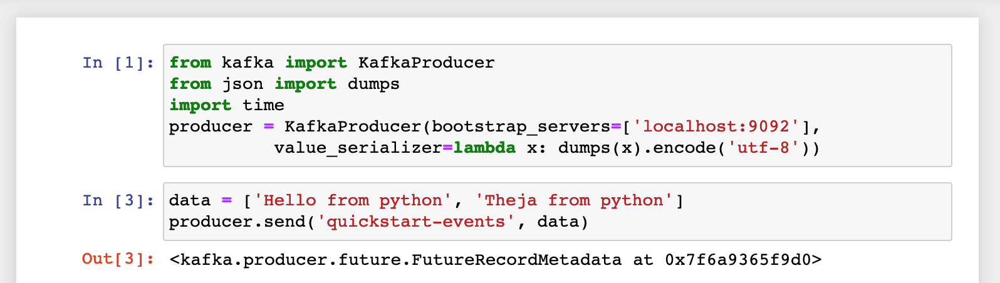
To verify, we can go back to the screen session on the remote machine, and go to the termial where we had started a consumer to view the events:
root@vultr:~/kafka_2.13-2.6.0# bin/kafka-console-consumer.sh --topic quickstart-events --from-beginning --bootstrap-server localhost:9092 Hello Theja ["Hello from python", "Theja from python"]We can also consume from the Jupyter notebook. And the underlying Kafka API we are using here is called the
Consumer API.
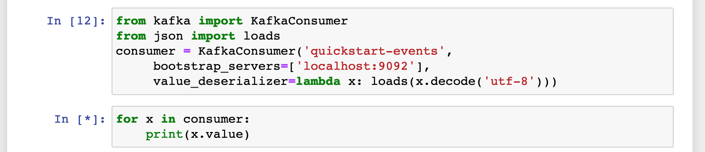
Restart the producer and add an entry as shown below:
root@vultr:~/kafka_2.13-2.6.0# bin/kafka-console-producer.sh --topic quickstart-events --bootstrap-server localhost:9092 >{"name":"Theja"}You should be able to see the output via the consumer iterable in the jupyter notebook.
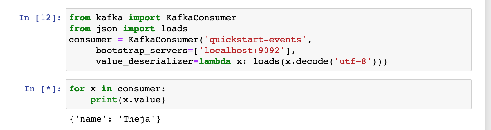
- The deserializer argument above defined how the input string has to be processed (here we want to make it a dictionary).
Next
- Consuming messages or producing messages from a single machine is not practiced typically in production environments.
- The underlying
Producer APIandConsumer APIthemselves are highly scalable. - To illistrate scalability, we will use PySpark to consume and transform ML inputs.